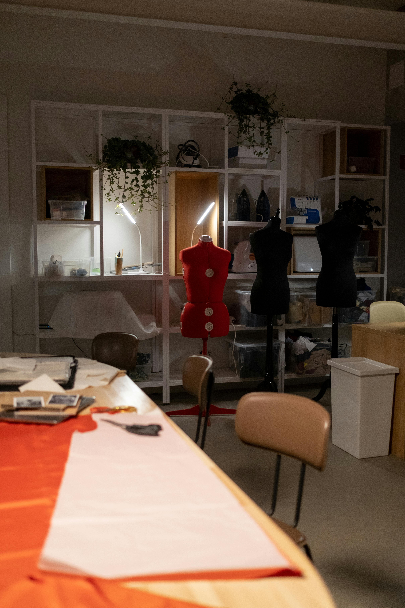

About the blog
Welcome to my sewing room
Hi, I’m Felicia. I created this blog to document my passion for handmade clothing, share my process, and inspire others to pick up a needle and thread.
Whether you’re brand new to sewing or already love making garments, I hope you find practical ideas and creative encouragement here.
